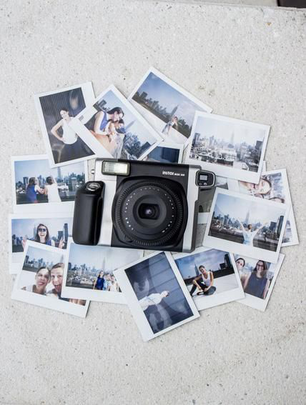
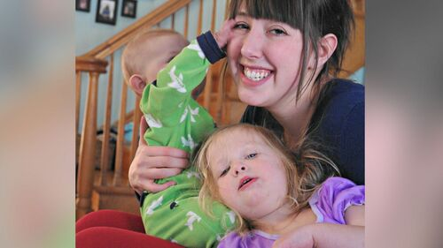
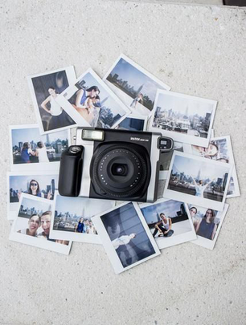
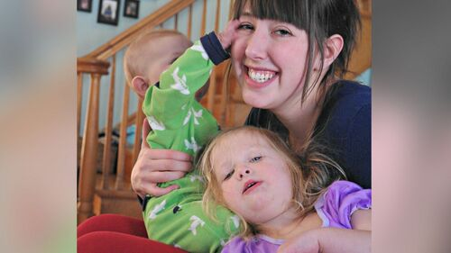

Abigail Palomino
Enter bio here
Enter bio here
Throughout the quarter, I have experienced so many difficulties and successes, all in the space of my own home. As a freshman, I admit to having my expectations set for college life (prior to attending) as being more interactive and engaging with my peers and professors. Although this happened to an extent, I also have to admit that online courses' overall setting still disillusioned me. Most of my issues with this quarter are rooted in the lack of variety in my everyday life. Under normal circumstances, I would have been occupied with meeting new people, engaging with professors, and living independently as a college student. However, this life was not able to actualize due to the manifestation of the current global pandemic. I attempted to adapt to the harsh truth that school life would have to be drastically altered; even so, it was still difficult to assimilate to my new stay-at-home routine. As a result, my 10-week journey began.
Before attending university, I have heard that classes were difficult due to the workload and overall stress that always followed—knowing that, I tried my best to prepare my room and mindset as a learning environment. With this intention in mind, I paced my course work for the first three weeks. That work ethic, however, soon faltered around the middle of the quarter. I no longer felt the zeal to accomplish the most in my capabilities as I once did at the beginning of the school year. I believe this was a result of experiencing an overwhelming feeling of apathy. The routine combined with the lack of healthy mental stimulation, accumulated enough for me to become complacent with minimal to no effort in my coursework. Typically, I would not have burned out that fast because I had the constant pressure and support from peers and teachers to continue completing my assignments. I believe that engagement through interactions in a school environment is necessary for me to continue my education. As a reasonably social person, the struggle to stay engaged in a virtual classroom is quite formidable. In high school, I often relied on the classroom setting to be a space where my mind is fully occupied with the lesson being taught. Therefore, I often became distracted by everything in my vicinity, thus, resulting in a loss of focus in the class. Overall, the virtual courses have felt like a constant tug of war for my attention between a screen and my surroundings. Lastly, and most debilitating of all, I felt left out. I felt as though I was the sole inhabitant of an island, being my room. To remediate this, I have tried attending online events but to no avail. When attempting to socialize, I realized that no one was comfortable enough to start a conversation. This harsh truth proved right to all of my classes as well as clubs. Having lost connection with most of my high school friends, I was hoping to at least meet one person to connect with. However, I believe that as long as the campus is closed, it will be challenging to befriend other students.
Enter bio here
Experience
Club Organization and Side Jobs
• Acadmic Decathalon Team Advisor
• President of International Cultural Exchange Club
• Babysat for 10 years
Stunt Double
• Stunt double for Jackie Chan Films
• Won award for falling off a 1000 ft building without getting hurt
Education
UC Riverside
Simi Valley Adult School
Saugus Highschool
Portfolio



 